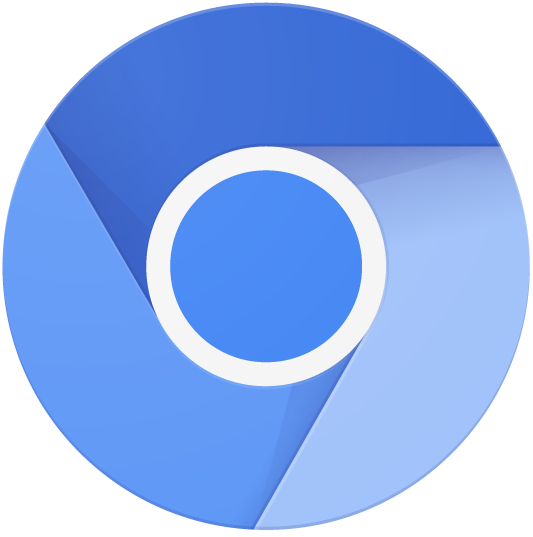
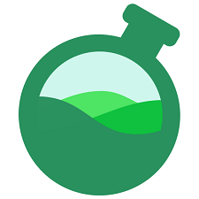
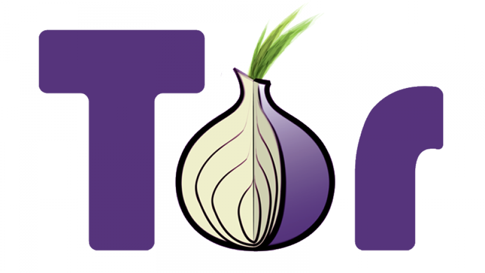
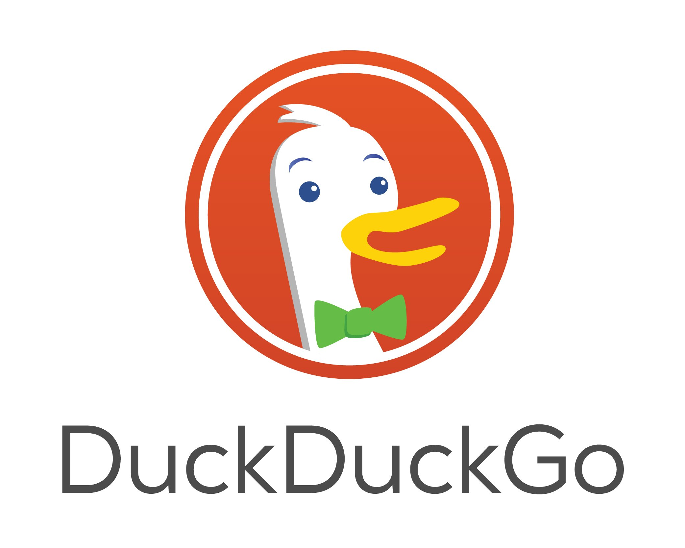

Browsers
Een browser is een manier om op het web te gaan. Je hebt veel verschillende browsers, zoals Chrome, Edge, Opera (GX), Brave, Vivaldi, Firefox, Waterfox, Librewolf etc. Ik ga het vooral hebben over privacy en security. Daarnaast ga ik het ook hebben over chromium/blink en gecko. Bijna elke browser is gebaseert op chromium. Firefox daarin tegen is gebaseert op gecko. Er is weinig verschil, maar over het algemeen heeft chromium betere security. Firefox daarin tegen zorgt ervoor dat er geen monopolie ontstaat en dat er alleen maar chromium gebaseerde browsers zijn. Chromium is ook gemaakt door Google. Firefox door Mozilla. Firefox geeft je meestal betere PRIVACY (dus niet security) dan chromium, omdat Google (genoeg uitleg). Duckduckgo browser (niet de search engine) en safari zijn gebaseert op webkit. Dit is slecht, omdat webkit veel slechtere security heeft dan chromium of firefox.
Chrome/Edge/Vivaldi/Opera (GX) en alle andere
Gebruik deze browsers alsjeblieft niet. Ze zijn allemaal closed source en zijn vreselijk voor je privacy.
Ik hou je niet tegen als je het wel wilt doen, maar ik raad ze allemaal sterk af (vooral omdat je browser en je OS de meest belangrijke aspecten zijn van je PC).
(Vivaldi is een prima browser en is redelijk betrouwbaar. Het blijft alleen een nadeel dat het niet open source is.)
Firefox
In mijn opinie is Firefox de beste browser op dit moment. Het is snel, veilig, open source en is niet gebaseert op Chromium. Toch is het na installeren niet helemaal veilig, omdat Mozilla (de makers van Firefox) je gegevens collecteert en het niet geoptimaliseerd is voor privacy. Daarom raad ik arkenfox aan als je een van de veiligste browsers ooit wilt. Zelf gebruik ik ook Firefox + arkenfox.
LibreWolf
Kort gezegt is LibreWolf een fork van Firefox en is het bijna hetzelfde als Firefox + arkenfox, zonder de moeite die arkenfox met zich meebrengt. Het is handig als je niet zo ervaren bent met het hardenen van Firefox. Echter heeft het geen automatische updates (heeft een extension nodig) en blijft het een fork.
Brave
Brave heeft hogere security dan LibreWolf, omdat het gebaseert is op Chromium. Dit is ook een nadeel, omdat het meedoet aan de monopolie van Google. Ook is het slechter voor privacy, omdat het op Chromium gebaseert is en Brave een bedrijf is. Echter is dit wel de beste optie als je een Chromium gebaseerde browser wilt. Daarnaast is ungoogled-chromium ook zeker geen slechte optie, maar voor een normale gebruiker is Brave waarschijnlijk beter.
Bromite
Bromite is de beste browser op Android. Het is op Chromium gebaseert en heel een ingebouwde adblocker. Het is snel en licht (gebruikt niet veel ruimte) en is FOSS. Firefox is een erg slecht idee op android, omdat het hele slechte security heeft (ook Linux heeft dit probleem). Daarnaast heb je ook nog Brave voor Android. Dit is mijn persoonlijke keuze, omdat Bromite een oude versie van Chromium gebruikt. Dit kan invloed hebben op je security. Dus als er weer een update komt zal ik zeker terug gaan naar Bromite. Mulch is een project van DivestOS en is wel helemaal up-to-date. Het heeft alleen geen adblocker en Brave is meestal beter.
Tor
Tor is de beste browser voor privacy en security. Je kan met Tor op de dark web en je bent compleet anoniem. Het is alleen niet aan te raden, omdat het erg langzaam is. LibreWolf is een goed alternatief. Tor staat voor "The Onion Ring".
Mullvad Browser
Mullvad is heel nieuw en is een van de veiligste browser op dit moment. Het zit heel dicht in de beurt van Tor en gebruikt natuurlijk Mullvad VPN. Je kan er echter wel veel meer "normale" dingen doen, omdat het niet bedoelt is als dark web. Dingen zoals Tiktok, die op Tor geblocked zijn, werken wel gewoon op Mullvad Browser. Voor meer uitleg kan je deze video bekijken.

Pale Moon
Pale Moon is een browser die op niks gebaseert is (independent). Het gebruikt geen Blink (Chromium) of Gecko (Firefox), maar Goanna. Het is helemaal open source. Het enige probleem is dat het er lelijk uitziet en oud is. Het mist features en is op een oude versie van Firefox gebaseert.
Search engines
De beste search engine vind ik Duckduckgo. Het is een van de beste voor privacy en security en is gedeeltelijk FOSS. Daarnaast zijn Startpage (gemaakt in Nederland lol) en SearX ook goed voor privacy, maar ik vindt ze minder goed. Met DuckduckGo kan je ook bangs (!) gebruiken. Dit is een uitroepteken + een letter of woord. Bijvoorbeeld: !g voor Google, !dpl voor DeepL of !w voor Wikipedia.
Extensions
uBlock Origin is een extensions voor bijna alle browser en dient als een adblocker en privacy helper. Er zijn verschillende modussen (very easy-, easy-, medium- en hardmode) van hoe gevoelig je hem wilt instellen. Gebruik Toolz by D3ward om te checken of het goed werkt. Brave en LibreWolf hebben dit niet nodig, omdat Brave een ingebouwde adblocker heeft en LibreWolf al uBlock Origin heeft geïnstalleerd!
uBlock Origin is de enigste extension die ik aanraad. Meer heb je ook niet nodig. Meerdere extensions kunnen je meer "fingerprintable" maken. Zie ook veel mensen met Privacy Badger of DuckDuckGo Privacy Essentials. Dit is compleet overbodig. uBlock Origin doet exact hetzelfde en zelfs nog een beetje meer.